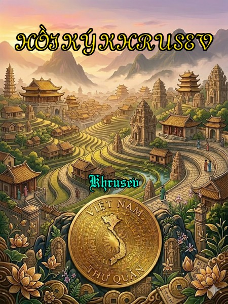

« Back
Hồi Ký Khrusev
By Khrusev

Mở Đâu
Lời Của Người Con Trai
Lời Nói Đầu
Tại Học Viện Công Nghiệp
Làm Quen Với Stalin
Một Lần Nữa Về Ukraina
Ukraina-Moskva
Năm 1941 Khó Khăn
Bước Ngoặt Stalingrad
Trước Trận Đánh Ở Kurk Và Khởi Đầu Trận Đánh
Những Suy Nghĩ Sau Chiến Tranh
Những Suy Nghĩ Sau Chiến Tranh ( 2)
Những Năm Đầu Tiên Sau Chiến Tranh
Lại Về Moskva
Xung Những Người Nổi Tiếng
Suy Nghĩ Của Tôi Về Stalin
Một Lần Nữa Nói Về Beria
Cái Chết Của Stalin
Từ Đại Hội 19 Đến Đại Hội 20 ĐCSLX
Sau Đại Hội 20 ĐCSLX
Về Albani
Mao Trạch Đông
Quan Hệ Với Trung Quốc Sau Chiến Thắng
Xây Dựng Nhiều Hơn Và Tốt Hơn!
Quốc Phòng Liên Xô Sau Chiến Tranh Vệ Quốc
Quân Sự, Khoa Học Và Thiết Bị Quốc Phòng
Những Vấn Đề Quân Sự Và Hoà Bình
Những Vấn Đề Quân Sự Và Hoà Bình 2